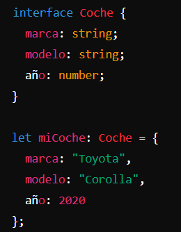

TYPESCRIPT
¿Qué es?
TypeScript es un superconjunto de JavaScript que añade tipado estático opcional y funciones avanzadas. Esto significa que comparte la misma base sintáctica que JavaScript, pero permite a los desarrolladores definir tipos de datos, lo que ayuda a evitar errores comunes. TypeScript, desarrollado por Microsoft y lanzado en 2012, se ha vuelto popular por facilitar la detección de errores durante el desarrollo. Es compatible con cualquier código JavaScript, lo que permite su integración en proyectos existentes y el uso de bibliotecas y frameworks populares como React, Vue y Angular.
Sintaxis
1. PUNTO Y COMA (;)
Uso: En TypeScript, el punto y coma es opcional al final de una declaración, pero se recomienda usarlo para evitar errores inesperados.let nombre: string = "Juan";
2. ASIGNACIÓN (=)
uso: Se utiliza el símbolo = para asignar un valor a una variable.let edad: number = 30;
3. Declaración de Variables (let, const, var)
Uso: let y const son las formas modernas de declarar variables. let permite cambiar el valor, mientras que const define una constante.let nombre: string = "Ana";
const pi: number = 3.1416;
4. Tipos (:)
Uso: Se usa para definir el tipo de una variable, parámetro o valor de retorno.let esActivo: boolean = true;
function sumar(a: number, b: number): number {
return a + b;
}
5. Funciones (function)
Uso: Se utiliza la palabra clave function para definir una función.function saludar(nombre: string): string {
return "Hola " + nombre;
}
6. Clases (class) y Modificadores de Acceso
Uso: class se usa para definir clases, y puedes usar modificadores como public, private, y protected para controlar la visibilidad de los miembros de la claseclass Persona {
private nombre: string;
edad: number;
constructor(nombre: string, edad: number) {
this.nombre = nombre;
}
public saludar(): string {
return `Hola, mi nombre es ${this.nombre}`;
}
}
7. Interfaces (interface)
Uso: interface se utiliza para definir la forma que debe tener un objeto.